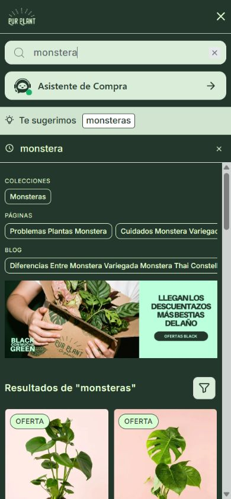
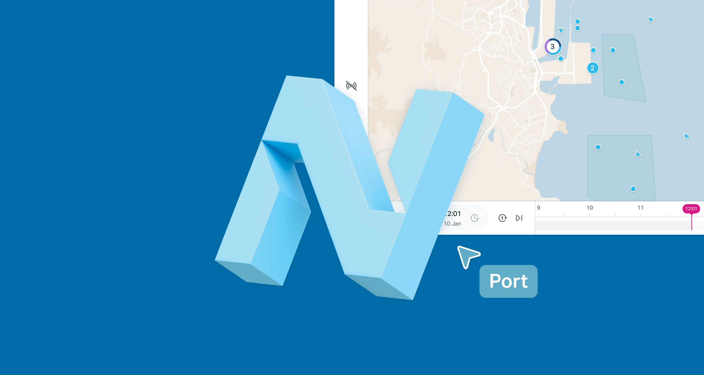

Kimera
I design AI search and shopping assistants across client stores, and I’m redesigning the back office retailers use to act on shopper insights.
Read case studyHola! I’m
I’m a Senior Product Designer. I specialize in turning complex AI and data into intuitive, human-centered experiences that empower better decision-making.
01 / CASE STUDIES
From the decisions I owned to the interfaces teams use.

I design AI search and shopping assistants across client stores, and I’m redesigning the back office retailers use to act on shopper insights.
Read case study
Leading product design from the ground up for a platform that helps port teams monitor, plan and act.
Read case study02 / ABOUT
I’m a Senior Product Designer based in Valencia. I design for people making decisions in complex environments, from port operations to AI commerce.
View my résuméTurn user needs and research into clear product decisions.
Connect complex workflows, design systems and back-office tools.
Work with developers to ship, test and improve real products.